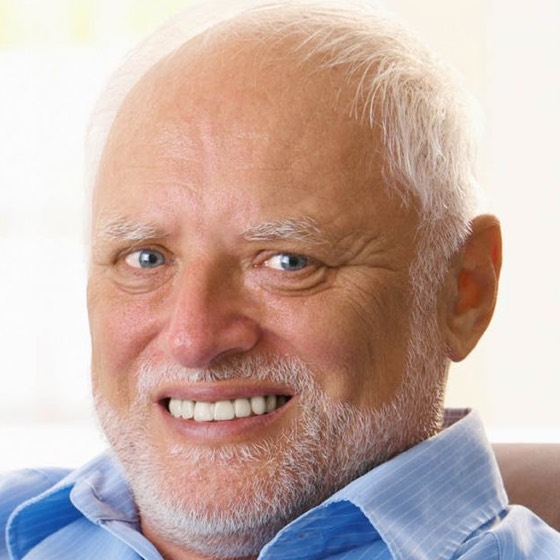

👀 LookNice
LOOK AT YOURSELF while looking like you're looking at them
Put your face right by your webcam so you look more engaged while staring at yourself in meetings.
Download for Mac👀 LookNice
Put your face right by your webcam so you look more engaged while staring at yourself in meetings.
Download for Mac